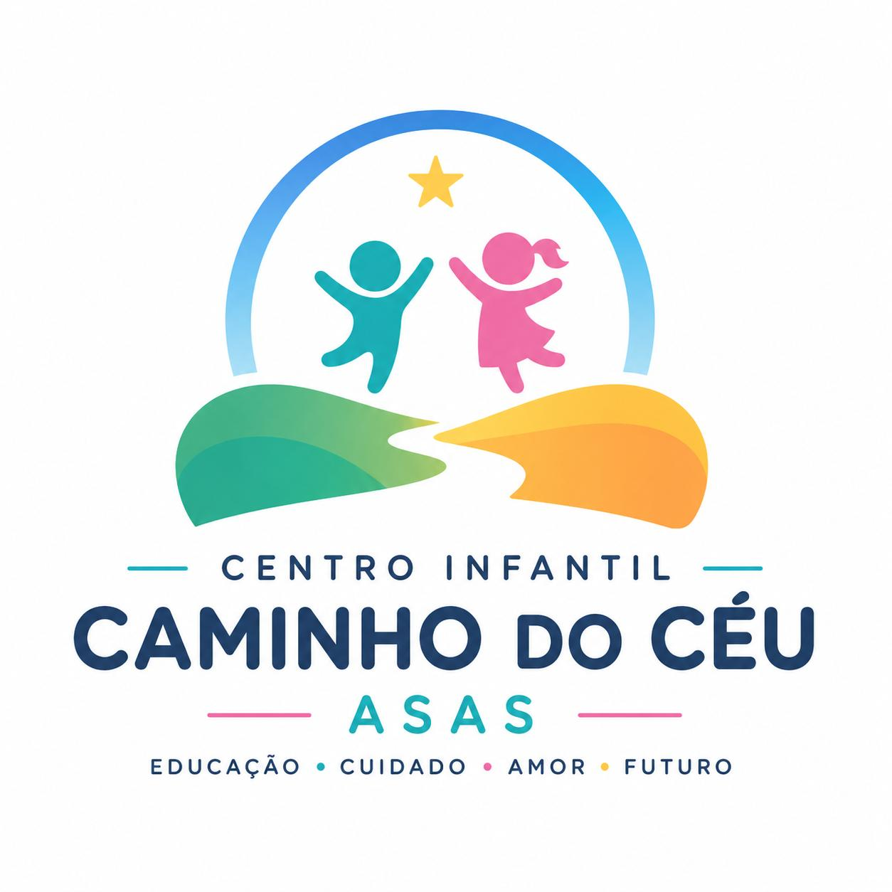
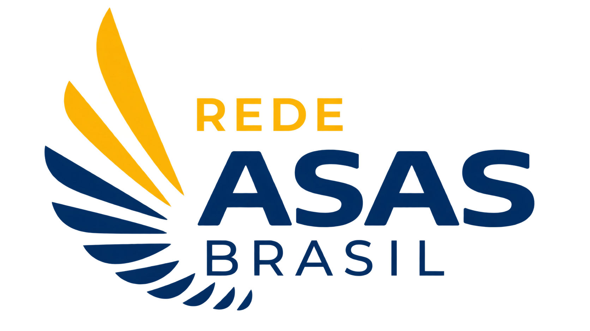
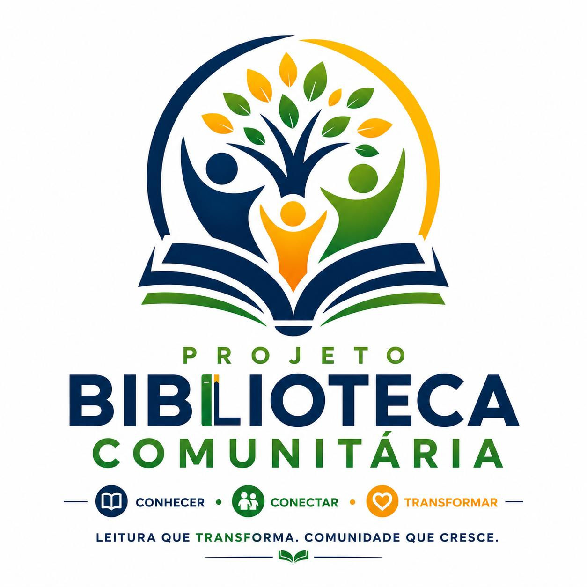
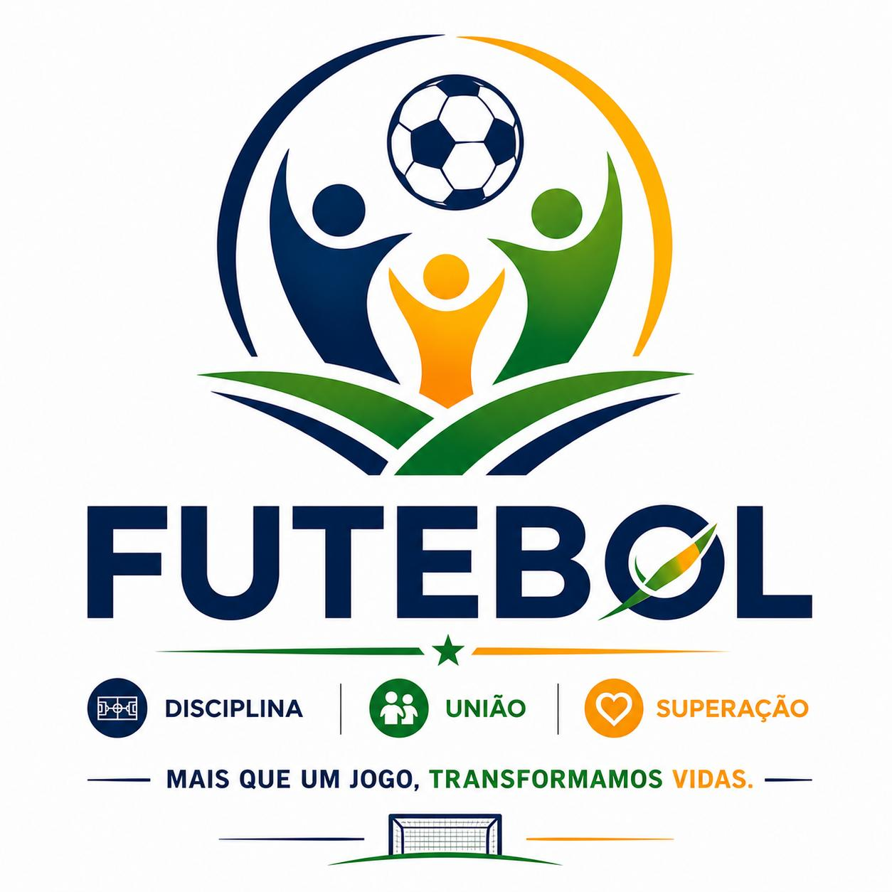
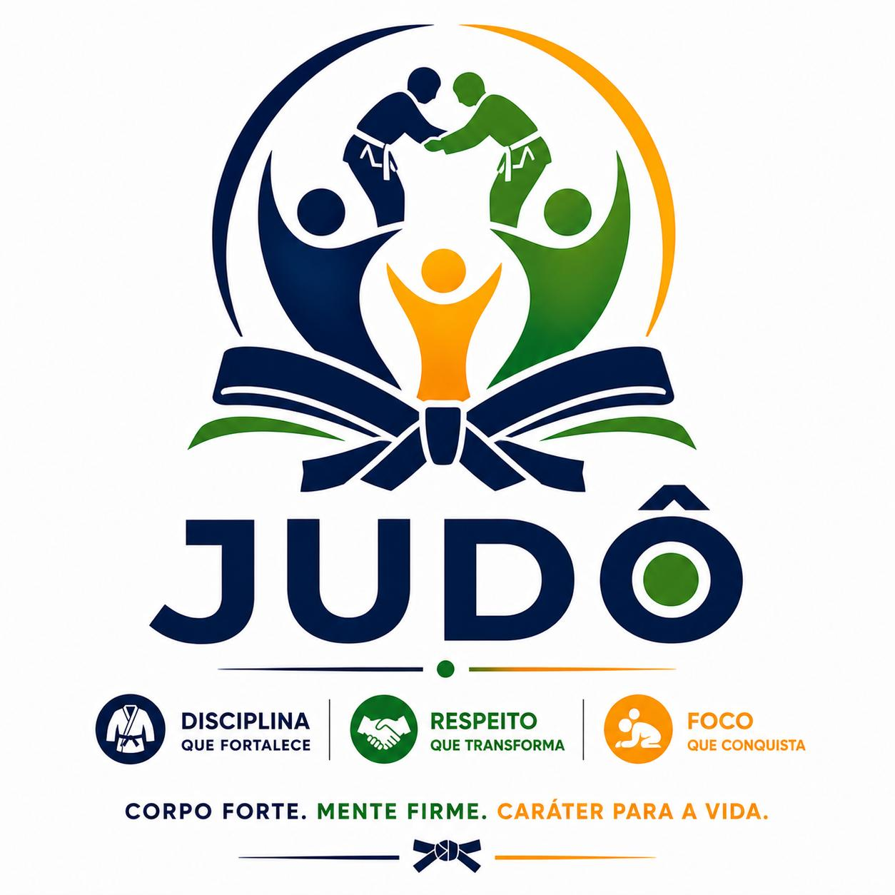
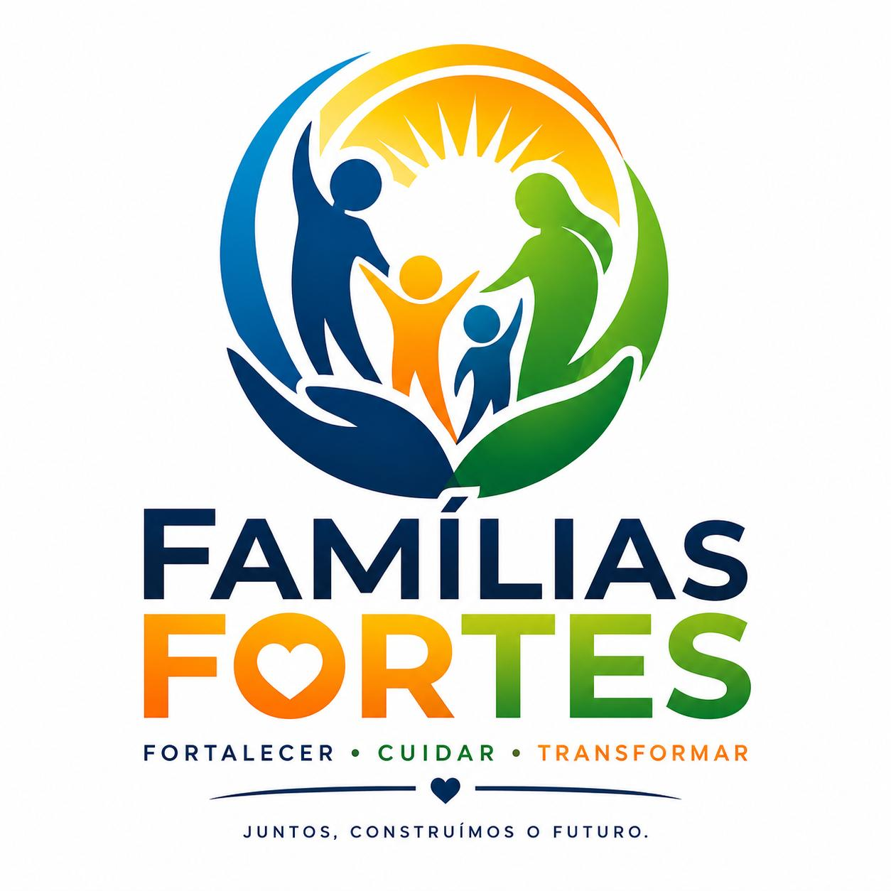
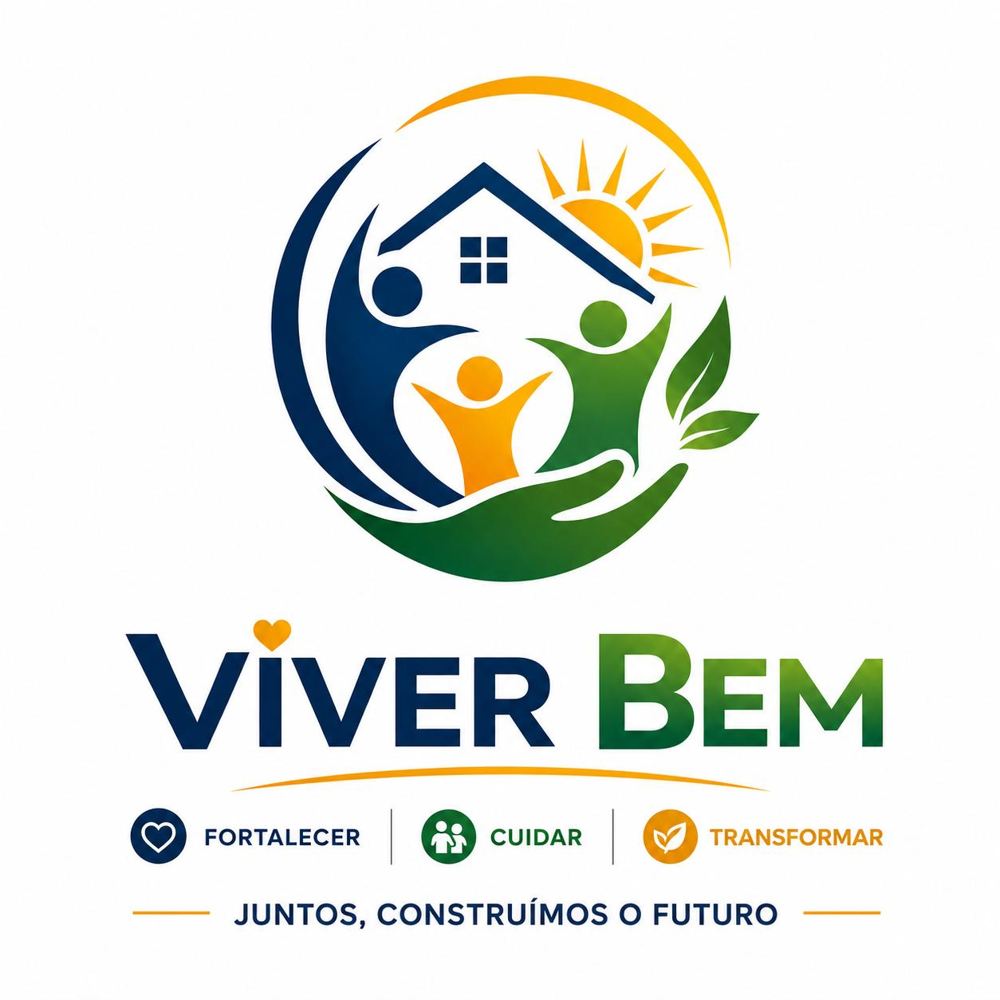

Centro Infantil Caminho do Céu
Educação infantil, alimentação, cuidado e desenvolvimento integral.
Público, frequência e vagas serão publicados após atualização institucional.
Nossa atuação
Os nomes e eixos abaixo foram organizados a partir do material institucional disponível. Faixa etária, vagas, frequência, horários, local e critérios de participação serão publicados após confirmação da equipe responsável.
Dados institucionais em atualização01 · Educação

Educação infantil, alimentação, cuidado e desenvolvimento integral.
Público, frequência e vagas serão publicados após atualização institucional.Formação acessível e incentivo ao crescimento educacional.

Leitura, imaginação, apoio escolar e acesso à cultura.
Inclusão digital, autonomia e novas oportunidades.
02 · Esporte

Iniciativa esportiva informada pela instituição. Situação, público, frequência e local estão em atualização.
Iniciativa esportiva informada pela instituição. Situação, público, frequência e local estão em atualização.
Dados institucionais em atualização
Disciplina, respeito, foco e caráter por meio do esporte.
03 · Cultura & tecnologia
Violão, teclado, canto e bateria para despertar expressão e confiança.
Iniciativa cultural informada pela instituição. Situação, público, frequência e responsável estão em atualização.
Dados institucionais em atualizaçãoComunicação, criatividade e produção de conteúdo.
Vozes da comunidade, histórias e ideias que inspiram.
Iniciativa de comunicação informada pela instituição. Situação, formato e frequência estão em atualização.
Dados institucionais em atualização04 · Famílias

Fortalecimento de vínculos, orientação e proteção social.

Cuidado, convivência e apoio para uma vida digna e saudável.
Tenho interesse
Apoie um projeto